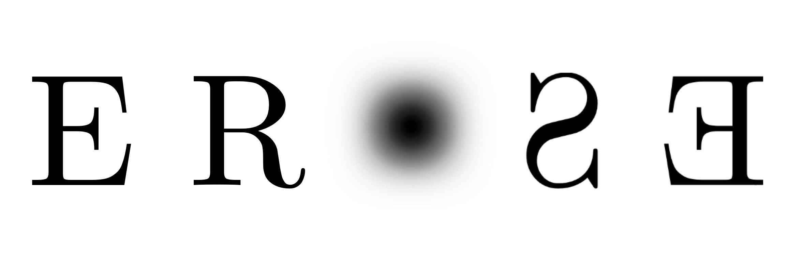

The erose algorithm
erose (Enhancing Rapidly Overdensities of Sources with Ease) is an automated algorithm searching for resolved overdensities of stars. It was designed to be fast and easy to use by anyone in any survey for any input combination of photometric bands. Its two main modules allow: 1) to weight stars in any (multi-)colour-magnitude space, 2) to spatially enhance stellar overdensities.
Expected detection limits in the LSST
This page summarises the results of Rusterucci et al. (2026), a paper that focuses on the impact of combining different photometric bands on the detectability of Milky Way satellites using the LSST. The main result shows that including the shallower, but metal-sensitive u band, positively impact our detection limits, especially for the most extended satellites.